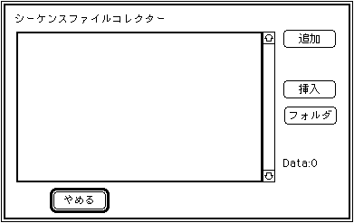

★SOUND Manual
★サウンドシュミレータマニュアル
★SOUND Manual
★サウンドシュミレータマニュアル
▲
戻る｜
進む▼
サウンドシュミレータマニュアル
シーケンスのバンク作成
- ここを選択すると、次のダイアログボックスが開きます。

ここに表示されるのは、［スタンダードMIDIファイルのコンバート］で変換した圧縮ファイル名の一覧で、コレクトリストと呼びます。
最初はなにも表示されず、［追加］または［挿入］で追加・挿入していきます。
［ファイル］［コレクトファイル］［コレクトファイルを開く］でコレクトリストを読み込めば毎回［追加］または［挿入］で登録せずにすみます。
Shift+マウス操作、で複数のファイルを選択してまとめてコンバートが可能です。
- 追加
- Addを選択すると、次のダイアログボックスが開きます。
ここでコレクトリストに圧縮ファイル名を追加します。
追加したい圧縮ファイル名を選択すると、コレクトリストの最後にその圧縮ファイル名が追加されます。
- 挿入
- Insertを選択すると、次のダイアログボックスが開きます。
ここでコレクトリストに圧縮ファイル名を挿入します。
コレクトリスト上で挿入したい場所をクリックし、その後で圧縮ファイル名を選択します。コレクトリストで選択した圧縮ファイル名の直前にここで選択した圧縮ファイル名が挿入されます。
- フォルダ
- 追加ボタン同様、標準選択ダイアログが表示されます。
ここで選択されたファイルを内包す、フォルダーに存在するすべてのコンバートファイルをエントリーさせます。
▲
戻る｜
進む▼
★SOUND Manual
★サウンドシュミレータマニュアル
Copyright SEGA ENTERPRISES, LTD., 1997